作物
作物の基本
畑の作物は、バニラの小麦と同じく 耕地 に植え、明るさ 9 以上で育ちます。骨粉を使うと早く育ちます。熟す前に壊すと、たいていは植えたもの（種など）だけが戻ります。果物の低木と木は、草ブロックや土に植えます。
野生の作物と果樹は、オーバーワールドの地上に生えています。どれがどのバイオームにどれくらい生えるかは、元の MOD（Farmer's Delight・Brewin' and Chewin'・Cultural Delights・Fruits Delight）と同じです。各節の「野生」か「生える所」の行と、下のバイオームごとの一覧に、生える所をまとめました。最初の種は野生の株から手に入れましょう。野生の株はハサミで壊すと株そのものが取れ、骨粉を使うとまわりに増えます。
村の農民はタマネギ・トマト・キャベツ・米・キュウリ・ナス・白ナス・トウモロコシ・アボカドを買い取り、行商人はキャベツの種・トマトの種・米・タマネギを売っています。
バイオームごとの野生の植物
それぞれのバイオームに生える野生の作物と果樹を、このページの節の名前で並べました（果樹は果物の名前です）。
- 平原: タマネギ・トウモロコシ・レモン・ニンジン
- ヒマワリ平原: タマネギ・トウモロコシ・レモン・ニンジン
- 草地: タマネギ・レモン・ニンジン
- 森林: タマネギ・リンゴ・キウイ・イチジク・オレンジ・ニンジン
- 花の森: タマネギ・リンゴ・キウイ・イチジク・オレンジ・ニンジン
- シラカバの森: タマネギ・ナシ・ニンジン
- シラカバの原生林: タマネギ・ナシ・ニンジン
- 暗い森: タマネギ・クランベリー・ニンジン
- ペールガーデン: タマネギ・ニンジン
- まだらな森: タマネギ・ニンジン
- サクラの林: タマネギ・ニンジン
- タイガ: ブルーベリー・サンザシ・ジャガイモ
- マツの原生林: ブルーベリー・サンザシ・ジャガイモ
- トウヒの原生林: ブルーベリー・サンザシ・ジャガイモ
- 雪のタイガ: ブルーベリー・柿
- 林: ブルーベリー・柿
- 雪原: ブルーベリー・柿
- 吹きさらしの丘: ブルーベリー・ジャガイモ
- 吹きさらしの砂利の丘: ジャガイモ
- 吹きさらしの森: ブルーベリー・ジャガイモ
- 石だらけの山頂: トマト
- 沼地: タマネギ・米・キュウリ・ブルーベリー・クランベリー・ヤマモモ・マンゴスチン・ドリアン・ニンジン
- マングローブの沼地: タマネギ・米・キュウリ・ブルーベリー・クランベリー・ヤマモモ・マンゴスチン・ドリアン・ニンジン
- ジャングル: 米・ナス・クランベリー・アボカド・ライチ・マンゴー・マンゴスチン・ドリアン
- まばらなジャングル: 米・ナス・アボカド・モモ・ドリアン
- 竹林: 米・ナス・クランベリー・アボカド・ライチ・マンゴー・マンゴスチン・ドリアン
- 砂漠: トマト・ハミウリ
- サバンナ: トマト
- サバンナの高原: トマト
- 吹きさらしのサバンナ: トマト
- 荒野: トマト
- 侵食された荒野: トマト
- 森のある荒野: トマト
- 河川: タマネギ・ニンジン
- 砂浜: キャベツ・タマネギ・米・パイナップル・ニンジン・ビートルート
- 雪の砂浜: キャベツ・ビートルート
- 石だらけの海岸: ジャガイモ
- キノコ島: トマト・群生した茶色のキノコ・群生した赤色のキノコ
 キャベツ
キャベツ
- 植えるもの: キャベツの種 を耕地に植えます。
- 育つと: 熟したら キャベツ 1 個と種 1〜4 個。熟す前に壊すと種 1 個。
- 野生: 砂浜・雪の砂浜の砂の上によく生えています。素手などで壊すと種が取れ、ときどきキャベツも出ます。
- 種の作り方: 野生のキャベツをまな板とナイフで切っても種が取れます。
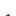
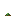
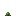
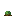
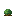
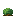
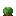
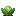
トマト
- 植えるもの:
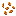
トマトの種 を耕地に植えると、まず苗になります。苗が育ちきると、実がなるつるに変わります。 - ロープ: つるの真上に ロープ があると、つるがロープを登って上にも実がなります。ロープ上のつるを壊すと、ロープは残ります。
- 収穫: 熟したつるを右クリックすると トマト が 1〜2 個取れ、つるは若い段階に戻ってまた実をつけます。
- 野生: 砂漠・サバンナ・サバンナの高原・吹きさらしのサバンナ・荒野・侵食された荒野・森のある荒野・石だらけの山頂・キノコ島の草ブロック・土・泥・苔・砂の上に、ときどき生えています。素手などで壊すと種が取れ、ときどきトマトも出ます。
- 種の作り方: トマト 1 個を作業台に置くと種になります。
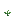
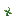
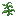
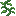
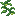
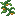
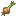
タマネギ
- 植えるもの: タマネギ そのものを耕地に植えます。種はありません。
- 育つと: 熟したら 2〜5 個、熟す前に壊すと 1 個。
- 野生: 平原・ヒマワリ平原・森林・花の森・シラカバの森・シラカバの原生林・暗い森・ペールガーデン・まだらな森・草地・サクラの林・沼地・マングローブの沼地・河川・砂浜の草ブロック・土・泥・苔の上に、アリウムと一緒にときどき生えています。
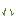
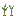
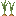
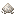
米
- 植えるもの: 米 を、深さ 1 マスの浅い水の中に植えます。水の底は土・草ブロック・泥・苔・耕地などです。
- 育ち方: 水の中の稲が育ちきると、水面の上に穂が出て、穂が熟します。
- 収穫: 熟した穂をナイフで刈ると米と
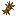
藁、それ以外で壊すと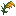
稲 が取れます。穂は作業台で米に、まな板で米と藁にできます。水の中の稲を壊すと米 1 個。 - 野生: 沼地・マングローブの沼地・ジャングル・まばらなジャングル・竹林・砂浜の浅い水の中によく生えています。
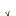
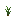
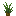
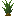
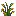
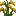
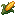
トウモロコシ
- 植えるもの: トウモロコシの粒 を耕地に植えます。
- 育ち方: 下の株が 4 段階で育ち、育ちきると真上に穂が出て、穂も 4 段階で育ちます。上の 1 マスを空けておきましょう。骨粉は下の株に使っても穂に使っても効きます。
- 収穫: 熟した穂を壊すと トウモロコシ 2 個、ナイフで刈ると藁も取れます。下の株は残り、また穂を出すので植え直す必要はありません。熟す前の穂を壊すと粒 1 個、穂の無い株を壊すと粒 1 個。
- 野生: 平原・ヒマワリ平原の草ブロック・土・泥・苔・砂の上によく生えています。素手などで壊すと、トウモロコシが 1〜2 個取れます。
- 粒の作り方: トウモロコシ 1 個を作業台に置くと粒になります。まな板とナイフで切ると、粒 3 個と藁が取れます。
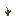
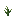
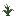
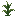
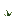
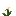
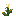
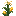
キュウリ
- 植えるもの:
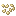
キュウリの種 を耕地に植えます。 - 育つと: 熟したら キュウリ 1 個と種 1〜4 個。熟す前に壊すと種 1 個。
- 野生: 沼地・マングローブの沼地の草ブロック・土・泥・苔・砂の上によく生えています。素手などで壊すと種が取れ、ときどきキュウリも出ます。
- 種の作り方: 野生のキュウリをまな板とナイフで切ると、キュウリと種が取れます。
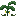
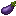
ナス
- 植えるもの:
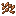
ナスの種 を耕地に植えます。 - 育つと: 熟したら ナス 1 個と種 1〜4 個。熟す前に壊すと種 1 個。
- 白ナス: 畑のナスは紫のナスだけを実らせます。
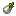
白ナス は野生のナスからだけ取れます。 - 野生: ジャングル・まばらなジャングル・竹林の草ブロック・土・泥・苔・砂の上によく生えています。素手などで壊すとナスの種が取れ、ときどき白ナスも出ます。
- 種の作り方: 野生のナスをまな板とナイフで切ると、白ナスと種が取れます。
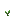
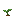
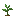
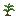
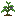
ブルーベリー
- 植えるもの: ブルーベリー そのものを、草ブロック・土などに植えると小さな低木になります。
- 育ち方: 明るさ 9 以上で育ち、花が咲いてから実がなります。骨粉を使うと 1 段ずつ育ちます。
- 収穫: 実がなった低木を右クリックすると ブルーベリー が 1〜2 個取れ、低木は花の前の段に戻ってまた実をつけます。実がなった低木を壊しても実が取れます。シルクタッチで壊すと低木そのものが取れます。
- 野生: タイガ・トウヒの原生林・マツの原生林・雪のタイガ・林・雪原・沼地・マングローブの沼地・吹きさらしの丘・吹きさらしの森の草ブロックの上に、実がなった低木がよく生えています。
クランベリー
- 植えるもの: クランベリー そのものを、草ブロック・土などに植えると小さな低木になります。
- 育ち方・収穫: ブルーベリーと同じです。クランベリーの低木はアイテムになりません。
- 野生: 沼地・マングローブの沼地・ジャングル・竹林・暗い森の草ブロックの上に、実がなった低木がよく生えています。
レモン
- 植えるもの: レモンの種 を草ブロック・土などに植えます。
- 育ち方: 2 段目から 2 ブロックの高さの木になります。上の 1 マスを空けておきましょう。骨粉を使うと 1 段ずつ育ちます。
- 収穫: 実がなった木を右クリックすると レモン が 1〜2 個取れ、木は花の前の段に戻ってまた実をつけます。
- 野生: 平原・ヒマワリ平原・草地の草ブロックの上に、実がなった木がよく生えています。
- 種の作り方: レモン 1 個を作業台に置くと種になります。まな板とナイフで切ると、輪切り 4 枚と種が取れます。
ハミウリ
- 植えるもの: ハミウリの種 を耕地に植えると、スイカと同じく茎が育ち、横の土の上に ハミウリ がなります。
- 収穫: ハミウリを壊すと ハミウリの薄切り が 3〜7 個取れます（幸運込みで最大 9 個）。シルクタッチならハミウリそのもの。茎は残ってまた実をつけます。
- 野生: 砂漠の砂の上に、ハミウリがときどき生えています。
- 種の作り方: ハミウリの薄切り 1 枚を作業台に置くと種になります。
パイナップル
- 植えるもの: パイナップルの苗 を砂・赤い砂・粗い土の上に植えます。耕地には植えられません。
- 育ち方: 明るさ 9 以上で 5 段階に育ちます。骨粉を使うと 1 段ずつ育ちます。
- 収穫: 右クリックでは取れません。育ちきったものを壊すと パイナップル が 1 個、それより前に壊すと苗が戻ります。
- 野生: 砂浜の砂の上に、野生のパイナップルがよく生えています。壊すとパイナップルが取れ、シルクタッチなら野生のパイナップルそのものが取れます。
- 苗の作り方: パイナップルをまな板とナイフで切ると、薄切り 6 枚と苗が取れます。


アボカド
- 植えるもの: アボカドの種 を草ブロック・土などに植えると、苗木と同じ早さで育って アボカドの苗木 に変わります。骨粉も苗木と同じく効きます。苗木は植木鉢にも植えられます。
- 木: 苗木が育つと、高さ 3〜5 の アボカドの原木 の幹に、アボカドの葉 と 実をつけるアボカドの葉 が茂る木になります。
- 収穫: 実をつける葉は、明るさに関係なく時間とともに熟します。骨粉を使うと 1 段ずつ熟します。段階 2・3 の葉を右クリックすると アボカド が 1〜2 個、熟しきった葉なら 2〜3 個取れ、葉は最初の段階に戻ってまた実をつけます。
- 葉を壊すと: ハサミかシルクタッチでなければ、どちらの葉もバニラのオークの葉と同じく、ときどき苗木・棒 1〜2 本、まれにアボカドを落とします。幸運で出やすくなります。
- 原木: 原木と木は、作業台で樹皮を剥いだジャングルの原木・木にも、ジャングルの板材 4 枚にもなります。斧で右クリックしても、まな板の上で斧を使っても樹皮を剥げます。
- 生える所: ジャングル・まばらなジャングル・竹林。多く生えています。
- 種の作り方: アボカド 1 個を作業台に置くと種になります。まな板とナイフで切っても、切ったアボカドと種が取れます。
果樹
果樹は、苗木を草ブロック・土などに植えると、バニラの苗木と同じく明るさ 9 以上で育って木になります。苗木は植木鉢にも植えられます。野生の果樹は、果樹ごとに決まったバイオームに生えています。以下の節は果樹ごとの苗木と生える所です。
- 花と実: 木に付いた葉は、ときどき花を咲かせ、花はやがて実になります。実の付いた葉を右クリックするか、物が葉の中に落ちると、果物が落ちて葉に戻ります。実は放っておいても落ちます。
- 葉を壊すと: ハサミかシルクタッチなら葉そのもの。それ以外では、実の付いた葉なら果物（幸運で 1 個まで増える）、それ以外の葉ならときどき苗木が取れます（幸運で出やすくなる）。
- 骨粉: 置いた葉や花の咲いた葉に使うと 1 段ずつ進みます。
- アイテムと落ちてくるブロックは、果樹の葉をすり抜けます。
果物から作るジャム・ゼリーと大釜、果物を食べたときの効果は、料理のページにまとめています。
リンゴ
- 苗木: リンゴの苗木。オークの原木の幹の木になります。
- 生える所: 森林・花の森。
ナシ
- 苗木: ナシの苗木。シラカバの原木の幹の木になります。
- 生える所: シラカバの森・シラカバの原生林。
サンザシ
- 苗木: サンザシの苗木。トウヒの原木の幹の木になります。
- 生える所: タイガ・トウヒの原生林・マツの原生林。
柿
- 苗木: 柿の苗木。トウヒの原木の幹の木になります。
- 生える所: 雪のタイガ・林・雪原。まれにしか生えていません。
キウイ
- 苗木: キウイの苗木。ジャングルの原木の幹の木になります。
- 生える所: 森林・花の森。
モモ
- 苗木: モモの苗木。ジャングルの原木の幹の木になります。
- 生える所: まばらなジャングル。多く生えています。
- モモ: 幹のすぐ上の葉から、つながる葉が一斉に花を咲かせ、一斉に実を付けます。
イチジク
- 苗木: イチジクの苗木。オークの原木の幹の木になります。
- 生える所: 森林・花の森。
オレンジ
- 苗木: オレンジの苗木。オークの原木の幹の木になります。
- 生える所: 森林・花の森。
ヤマモモ
- 苗木: ヤマモモの苗木。トウヒの原木の幹の木になります。
- 生える所: 沼地・マングローブの沼地。
ライチ
- 苗木: ライチの苗木。ジャングルの原木の幹の木になります。
- 生える所: ジャングル・竹林。多く生えています。
マンゴー
- 苗木: マンゴーの苗木。ジャングルの原木の幹の木になります。
- 生える所: ジャングル・竹林。多く生えています。
マンゴスチン
- 苗木: マンゴスチンの苗木。オークの原木の幹の木になります。
- 生える所: 沼地・マングローブの沼地・ジャングル・竹林。まれにしか生えていません。
ドリアン
- 苗木: ドリアンの苗木。ジャングルの原木の幹の木になります。
- 生える所: 沼地・マングローブの沼地・ジャングル・竹林・まばらなジャングル。ほかの果樹よりずっと少なく、ごくまれにしか見つかりません。
- ドリアン: 芽吹いた葉が下に花を下げ、花が小さな実を経て熟すと、ドリアン が落ちてきます。当たると落ちた高さに応じて痛いので注意しましょう。ドリアンの葉は苗木を落としません。
- 苗木の手に入れ方: ドリアンをまな板の上で斧で切ると、果肉・兜・殻と一緒に苗木が取れます。スニッファーが掘り出すこともあります。
ロープ
ロープは藁から作ります。トマトを登らせるほか、ブロックの横か下に付けて、はしごのように登れます（ロープを登ったトマトのつるも登れます）。
- ロープを持ってロープを右クリックすると、一番下に継ぎ足します。しゃがんでいると、クリックした面の横に置きます。
- 素手でしゃがんで右クリックすると、一番下のロープを巻き取ります。素手で右クリックすると、ロープの上に吊るした鐘が鳴ります。
- ロープは廃坑・沈没船・ダンジョンのチェストに入っていることがあり、燃料にもなります。
ロープからは、飛び越えられない高さのロープのフェンスとフェンスゲート（リードを結べます）と、落ちてもダメージを受けずに跳ね返る安全ネット（しゃがんでいると跳ねません）が作れます。
ニンジン
バニラの作物です。この MOD では野生のニンジンが生え、壊すとニンジンが取れます。
- 野生: 平原・ヒマワリ平原・森林・花の森・シラカバの森・シラカバの原生林・暗い森・ペールガーデン・まだらな森・草地・サクラの林・沼地・マングローブの沼地・河川・砂浜の草ブロック・土・泥・苔の上に、ときどき生えています。
ジャガイモ
バニラの作物です。この MOD では野生のジャガイモが生え、壊すとジャガイモが取れます。
- 野生: タイガ・マツの原生林・トウヒの原生林・吹きさらしの丘・吹きさらしの砂利の丘・吹きさらしの森・石だらけの海岸の草ブロック・土・泥・苔の上に、シダと一緒にときどき生えています。
ビートルート
バニラの作物です。この MOD では野生のビートルートが生え、素手などで壊すとビートルートの種が取れ、ときどきビートルートも出ます。
- 野生: 砂浜・雪の砂浜の砂の上によく生えています。
- 砂の上の砂地の草を壊しても、ビートルートの種が取れます。
肥沃な土
有機コンポスト は、土・藁・骨粉と、腐った肉か木の皮から作ります。置いておくと少しずつ 肥沃な土 に変わります。日光の当たる場所、水の近く、キノコ・菌糸ブロック・ほかの有機コンポストのような「分解を早めるもの」の隣だと早く変わります。JEI の「分解」の画面で確かめられます。
- 肥沃な土は、ランダムティック 5 回に 1 回（初期設定。設定の
richSoilBoostChance）、上の植物か、下にぶら下がった洞窟のツタを、骨粉 1 回分だけ育てます。骨粉の音はしません。草・花のように育つのではなく広がる植物には効きません。 - クワで耕すと（スニークしていてもいなくても）肥沃な耕地 になります。水で完全に湿っている間、上の作物を同じように育てます。乾いて戻ることも、踏み荒らされることもありません。上にブロックを置いたときだけ、肥沃な土に戻ります。
- 木が育っても、根元の肥沃な土はそのまま残ります。村の農民も肥沃な耕地を耕します。
- 村には、有機コンポストと肥沃な土でできた堆肥の山が建つことがあります（設定の
generateVillageCompostHeaps）。
 群生した茶色のキノコ
群生した茶色のキノコ
肥沃な土の上に茶色のキノコを置くと、群生したキノコになり、その場で 4 段階に育ちます。キノコ島の菌糸ブロックの上にも生えています。
- ハサミで右クリックするとキノコを 1 個ずつ、ナイフで切るとまとめて取れます。
- 育ちきった群生は、ハサミで壊すとそのまま取れます。
 群生した赤色のキノコ
群生した赤色のキノコ
育て方は茶色のキノコと同じです。肥沃な土の上に赤色のキノコを置きます。